| Symbol |
Description |
A4950E | Description: Full-Bridge, DMOS PWM, Motor Driver, 40V, 3.5A, -40 to +85C
Keys: full-bridge h-bridge
Datasheet: http://www.allegromicro.com/~/media/Files/Datasheets/A4950-Datasheet.ashx |
A4950K | Description: Full-Bridge, DMOS PWM, Motor Driver, 40V, 3.5A, -40 to +125C
Keys: full-bridge h-bridge
Datasheet: http://www.allegromicro.com/~/media/Files/Datasheets/A4950-Datasheet.ashx |
A4952_LY | Description: Full-Bridge, DMOS PWM, Motor Driver, 40V, 2A, MSOP-10
Keys: Full-bridge h-bridge
Datasheet: www.allegromicro.com/~/media/Files/Datasheets/A4952-3-Datasheet.ashx?la=en |
A4953_LJ | Description: Full-Bridge, DMOS PWM, Motor Driver, 40V, 2A, SOIC-8
Keys: Full-bridge h-bridge
Datasheet: www.allegromicro.com/~/media/Files/Datasheets/A4952-3-Datasheet.ashx?la=en |
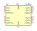
A4954 | Description: Fullbridge PWM Motor Driver, UVLO, OCP, Current Limit, Short Circuit Protection, TSSOP-16
Keys: Fullbridge, Stepper Driver
Datasheet: https://www.allegromicro.com/-/media/Files/Datasheets/A4954-Datasheet.ashx |
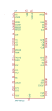
AMT49413 | Description: 3-Phase BLDC Controller and MOSFET Driver, QFN-48
Keys: BLDC 3-Phase
Datasheet: https://www.allegromicro.com/-/media/Files/Datasheets/AMT49413-Datasheet.ashx |
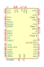
DRV8308 | Description: Brushless DC motor controller, closed loop, hall sensor inputs, current limiting, SPI interface
Keys: bldc mosfet-driver hall-sensor
Datasheet: http://www.ti.com/lit/ds/symlink/drv8308.pdf |
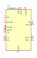
DRV8662 | Description: Piezo Haptic Driver with Integrated Boost Converter
Keys: piezo driver boost
Datasheet: http://www.ti.com/lit/ds/symlink/drv8662.pdf |
| DRV8711 | Description: Stepper motor controller, external N-channel MOSFET, single bipolar stepper motor, dual brushed DC motors
Keys: Stepper driver
Datasheet: http://www.ti.com/lit/ds/slvsc40f/slvsc40f.pdf |
DRV8800PWP | Description: H-Bridge Motor Driver, TSSOP-16
Keys: H-Bridge Motor Driver
Datasheet: http://www.ti.com/lit/ds/symlink/drv8801.pdf |
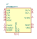
DRV8800RTY | Description: H-Bridge Motor Driver, WQFN-16
Keys: H-Bridge Motor Driver
Datasheet: http://www.ti.com/lit/ds/symlink/drv8801.pdf |
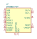
DRV8801PWP | Description: H-Bridge Motor Driver, TSSOP-16
Keys: H-Bridge Motor Driver
Datasheet: http://www.ti.com/lit/ds/symlink/drv8801.pdf |
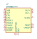
DRV8801RTY | Description: H-Bridge Motor Driver, WQFN-16
Keys: H-Bridge Motor Driver
Datasheet: http://www.ti.com/lit/ds/symlink/drv8801.pdf |
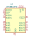
DRV8833PW | Description: Dual H-Bridge Motor Driver, TSSOP-16
Keys: H-bridge motor driver
Datasheet: http://www.ti.com/lit/ds/symlink/drv8833.pdf |
DRV8833PWP | Description: Dual H-Bridge Motor Driver, HTSSOP-16
Keys: H-bridge motor driver
Datasheet: http://www.ti.com/lit/ds/symlink/drv8833.pdf |
DRV8833RTY | Description: Dual H-Bridge Motor Driver, WQFN-16
Keys: H-bridge motor driver
Datasheet: http://www.ti.com/lit/ds/symlink/drv8833.pdf |
DRV8837 | Description: H-Bridge driver, 1.8A, Low Voltage, PWM input, WSON-8
Keys: half bridge driver
Datasheet: http://www.ti.com/lit/ds/symlink/drv8837.pdf |
DRV8837C | Description: H-Bridge driver, 1A, Low Voltage, PWM input, WSON-8
Keys: half bridge driver
Datasheet: http://www.ti.com/lit/ds/symlink/drv8837c.pdf |
DRV8838 | Description: H-Bridge driver, 1.8A, Low Voltage, PH/EN input, WSON-8
Keys: half bridge driver
Datasheet: http://www.ti.com/lit/ds/symlink/drv8837.pdf |
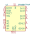
DRV8847PWP | Description: Dual H-Bridge Motor Driver, 1A, HTSSOP-16
Keys: Dual H-Bridge motor driver
Datasheet: https://www.ti.com/lit/ds/symlink/drv8847.pdf |
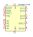
DRV8847PWR | Description: Dual H-Bridge Motor Driver, 1A, TSSOP-16
Keys: Dual H-Bridge motor driver
Datasheet: https://www.ti.com/lit/ds/symlink/drv8847.pdf |
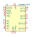
DRV8847RTE | Description: Dual H-Bridge Motor Driver, 1A, WQFN-16
Keys: Dual H-Bridge motor driver
Datasheet: https://www.ti.com/lit/ds/symlink/drv8847.pdf |
DRV8847SPWR | Description: Dual H-Bridge Motor Driver, 1A, I2C Interface, TSSOP-16
Keys: Dual H-Bridge motor driver
Datasheet: https://www.ti.com/lit/ds/symlink/drv8847.pdf |
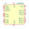
DRV8848 | Description: Dual H-Bridge motor driver, PWM controlled, single/dual brushed DC stepper, +2 to +18 VDD, TSSOP-16
Keys: Dual H-Bridge motor driver
Datasheet: http://www.ti.com/lit/ds/symlink/drv8848.pdf |
DRV8870DDA | Description: Brushed DC Motor Driver, PWM Control, 45V, 3.6A, Dynamic current limiting, HTSOP-8
Keys: H-bridge driver motor current limit
Datasheet: http://www.ti.com/lit/ds/symlink/drv8870.pdf |
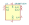
DRV8871DDA | Description: Brushed DC Motor Driver, PWM Control, 45V, 3.6A, Current limiting, HTSOP-8
Keys: H-bridge driver motor current limit
Datasheet: http://www.ti.com/lit/ds/symlink/drv8871.pdf |
DRV8872DDA | Description: Brushed DC Motor Driver, PWM Control, 45V, 3.6A, Current limiting, Fault Reporting, HTSOP-8
Keys: H-bridge driver motor current limit
Datasheet: http://www.ti.com/lit/ds/symlink/drv8872.pdf |
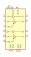
L293 | Description: Quadruple Half-H Drivers
Keys: Half-H Driver Motor
Datasheet: http://www.ti.com/lit/ds/symlink/l293.pdf |
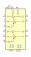
L293D | Description: Quadruple Half-H Drivers
Keys: Half-H Driver Motor
Datasheet: http://www.ti.com/lit/ds/symlink/l293.pdf |
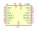
L293E | Description: Push-pull four-channel driver, DIP-20
Keys: Half-H Driver Motor Sense
Datasheet: https://www.st.com/resource/en/datasheet/l293e.pdf |
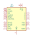
L297 | Description: Stepper Motor Controller, DIP-20/SO-20
Keys: Stepper Motor Controller
Datasheet: www.st.com/resource/en/datasheet/cd00000063.pdf |
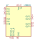
L298HN | Description: Dual full bridge motor driver, up to 46V, 4A, Multiwatt-15
Keys: H-bridge motor driver
Datasheet: http://www.st.com/st-web-ui/static/active/en/resource/technical/document/datasheet/CD00000240.pdf |
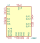
L298P | Description: Dual full bridge motor driver, up to 46V, 4A
Keys: H-bridge motor driver
Datasheet: http://www.st.com/st-web-ui/static/active/en/resource/technical/document/datasheet/CD00000240.pdf |
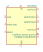
LMD18200 | Description: 3A, 55V H-Bridge, Motion Control Applications, TO-220-11
Keys: H-Bridge DC stepper servo motor driver Motion Control Applications
Datasheet: http://www.ti.com/lit/ds/symlink/lmd18200.pdf |
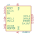
PG001M | Description: Parallel to serial data converter for SLA7042M/SLA7044M
Keys: Support IC for SLA7042M/SLA7044M
Datasheet: http://www.allegromicro.com/~/media/Files/Sanken/Datasheets/PG001M-Datasheet.ashx |
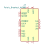
Pololu_Breakout_A4988 | Description: Pololu Breakout Board, Stepper Driver A4988
Keys: Pololu Breakout Board Stepper Driver A4988
Datasheet: https://www.pololu.com/product/2980/pictures |
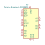
Pololu_Breakout_DRV8825 | Description: Pololu Breakout Board, Stepper Driver DRV8825
Keys: Pololu Breakout Board Stepper Driver DRV8825
Datasheet: https://www.pololu.com/product/2982 |
SLA7042M | Description: Unipolar PWM high-current motor driver
Keys: Stepper driver
Datasheet: www.sumzi.com/upload/files/2007/07/2007073114282034189.PDF |
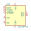
SLA7044M | Description: Unipolar PWM high-current motor driver
Keys: Stepper driver
Datasheet: http://www.sumzi.com/upload/files/2007/07/2007073114282034189.PDF |
SLA7070MPRT | Description: Unipolar 2-phase stepper motor driver, Full and Half step, 1A
Keys: Stepper driver
Datasheet: http://www.semicon.sanken-ele.co.jp/sk_content/sla7070mprt_ds_en.pdf |
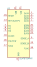
SLA7071MPRT | Description: Unipolar 2-phase stepper motor driver, Full and Half step, 1.5A
Keys: Stepper driver
Datasheet: http://www.semicon.sanken-ele.co.jp/sk_content/sla7071mprt_ds_en.pdf |
SLA7072MPRT | Description: Unipolar 2-phase stepper motor driver, Full and Half step, 2A
Keys: Stepper driver
Datasheet: http://www.semicon.sanken-ele.co.jp/sk_content/sla7072mprt_ds_en.pdf |
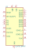
SLA7073MPRT | Description: Unipolar 2-phase stepper motor driver, Full and Half step, 3A
Keys: Stepper driver
Datasheet: http://www.semicon.sanken-ele.co.jp/sk_content/sla7073mprt_ds_en.pdf |
SLA7075MPRT | Description: Unipolar 2-phase stepper motor driver, Microstep, 1A
Keys: Stepper driver
Datasheet: http://www.semicon.sanken-ele.co.jp/sk_content/sla7075mprt_ds_en.pdf |
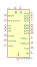
SLA7076MPRT | Description: Unipolar 2-phase stepper motor driver, Microstep, 1.5A
Keys: Stepper driver
Datasheet: http://www.semicon.sanken-ele.co.jp/sk_content/sla7076mprt_ds_en.pdf |
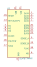
SLA7077MPRT | Description: Unipolar 2-phase stepper motor driver, Microstep, 2A
Keys: Stepper driver
Datasheet: http://www.semicon.sanken-ele.co.jp/sk_content/sla7077mprt_ds_en.pdf |
SLA7078MPRT | Description: Unipolar 2-phase stepper motor driver, Microstep, 3A
Keys: Stepper driver
Datasheet: http://www.semicon.sanken-ele.co.jp/sk_content/sla7078mprt_ds_en.pdf |
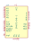
STK672-040-E | Description: Stepper motor driver with microstepping controller, 1.5A
Keys: Stepper driver
Datasheet: http://www.onsemi.com/pub_link/Collateral/EN5227-D.PDF |
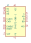
STK672-080-E | Description: Stepper motor driver with microstepping controller, 2.8A
Keys: Stepper driver
Datasheet: http://www.onsemi.com/pub_link/Collateral/EN6507-D.PDF |
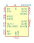
STSPIN220 | Description: Low voltage stepper motor driver, 1.8V to 10V input, 1.3Arms output, 0.4 Rdson per phase (typical), QFN-16 package
Keys: motor driver stepper
Datasheet: www.st.com/resource/en/datasheet/stspin220.pdf |
STSPIN230 | Description: Low voltage triple half-bridge motor driver, 1.8V to 10V input, 1.3Arms output, 0.4 Rdson per phase (typical), QFN-16 package
Keys: motor driver half-bridge
Datasheet: www.st.com/resource/en/datasheet/stspin230.pdf |
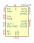
STSPIN240 | Description: Low voltage dual brush DC motor driver, 1.8V to 10V input, 1.3Arms output, 0.4 Rdson per phase (typical), QFN-16 package
Keys: motor driver dc brushed
Datasheet: www.st.com/resource/en/datasheet/stspin240.pdf |
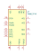
TB6612FNG | Description: Driver IC for Dual DC motor, SSOP-24
Keys: H-bridge motor driver
Datasheet: https://toshiba.semicon-storage.com/us/product/linear/motordriver/detail.TB6612FNG.html |
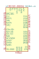
TMC2041-LA | Description: Standalone Dual driver for two-phase bipolar stepper motor, 2.2A, 4.75-26V, SPI, UART, QFN-48
Keys: Dual driver stepper motor
Datasheet: https://www.trinamic.com/fileadmin/assets/Products/ICs_Documents/TMC2041_datasheet.pdf |
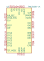
TMC2100-LA | Description: Standalone driver for two-phase bipolar stepper motor, 2.0A, 4.75-46V, QFN-36
Keys: Driver stepper motor
Datasheet: https://www.trinamic.com/fileadmin/assets/Products/ICs_Documents/TMC2100_datasheet_Rev1.08.pdf |
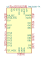
TMC2100-TA | Description: Standalone driver for two-phase bipolar stepper motor, 2.0A, 4.75-46V, TQFP-48
Keys: Standalone driver stepper motor
Datasheet: https://www.trinamic.com/fileadmin/assets/Products/ICs_Documents/TMC2100_datasheet_Rev1.08.pdf |
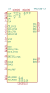
TMC2130-LA | Description: Driver for two-phase bipolar stepper motor, 2.0A, SPI, 4.75-46V, QFN-36
Keys: stepper motor driver
Datasheet: http://www.trinamic.com/fileadmin/assets/Products/ICs_Documents/TMC2130_datasheet.pdf |
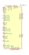
TMC2130-TA | Description: Driver for two-phase bipolar stepper motor, 2.0A, SPI, 4.75-46V, TQFP-48
Keys: stepper motor driver
Datasheet: http://www.trinamic.com/fileadmin/assets/Products/ICs_Documents/TMC2130_datasheet.pdf |
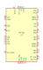
TMC262 | Description: Driver for two-phase stepper motors with external mosfet
Keys: trinamic tlc262 stepper
Datasheet: https://www.trinamic.com/fileadmin/assets/Products/ICs_Documents/TMC262_Datasheet.pdf |
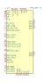
TMC5130A-TA | Description: Power Driver For Stepper Motors, 2.0A, 4.75-46V, TQFP-48
Keys: Standalone driver stepper motor
Datasheet: https://www.trinamic.com/fileadmin/assets/Products/ICs_Documents/TMC5130_datasheet_Rev1.17.pdf |
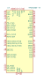
TMC5160A-TA | Description: 20A Driver for two-phase bipolar stepper motor, SPI, UART, TQFP-48
Keys: stepper motor driver trinamic
Datasheet: https://www.trinamic.com/fileadmin/assets/Products/ICs_Documents/TMC5160A_Datasheet_Rev1.14.pdf |
VNH2SP30 | Description: Full Bridge Motor Driver, 41V, 30A, -40 to 150C
Keys: full-bridge h-bridge
Datasheet: http://www.st.com/content/ccc/resource/technical/document/datasheet/group2/66/b8/f5/2c/9a/66/41/c7/CD00043711/files/CD00043711.pdf/jcr:content/translations/en.CD00043711.pdf |
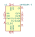
VNH5019A-E | Description: Full Bridge Motor Driver, 41V, 30A, -40 to 150C, MultiPowerSO-30
Keys: full-bridge h-bridge
Datasheet: https://www.st.com/resource/en/datasheet/vnh5019a-e.pdf |
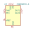
ZXBM5210-S | Description: Reversible DC motor drive with speed control, 3-18V, 0.85A, SOIC-8
Keys: H-bridge, motor driver, PWM, single coil
Datasheet: https://www.diodes.com/assets/Datasheets/ZXBM5210.pdf |
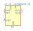
ZXBM5210-SP | Description: Reversible DC motor drive with speed control, 3-18V, 0.85A, SOIC-8EP
Keys: H-bridge, motor driver, PWM, single coil
Datasheet: https://www.diodes.com/assets/Datasheets/ZXBM5210.pdf |